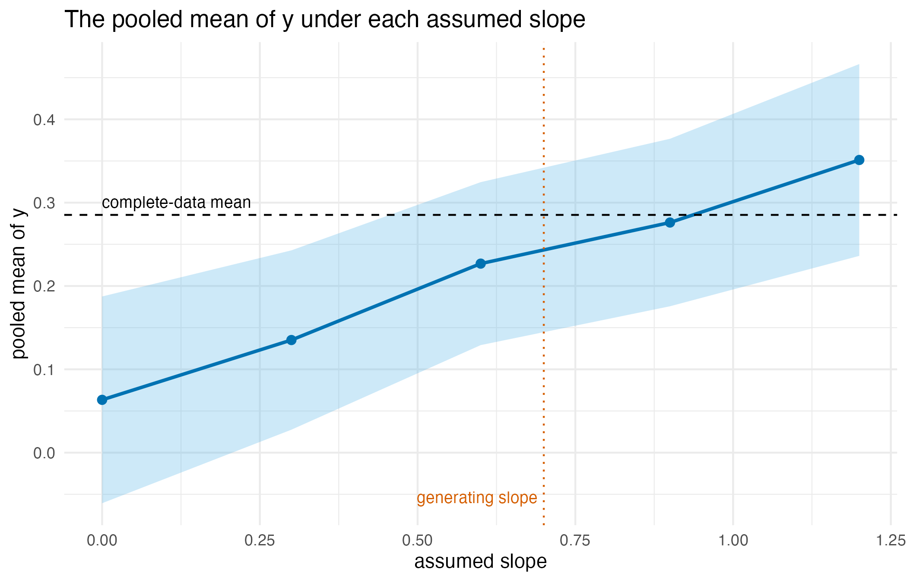

Missing data that depends on the missing value
Source:vignettes/missing_data_mnar.Rmd
missing_data_mnar.Rmd
has_ggplot2 <- requireNamespace("ggplot2", quietly = TRUE)The problem
Imputing missing data with a mixture shows how to fill the holes in a dataset under one assumption, called missing at random. The chance that a value is missing may depend on the other values in its row, but not on the missing value itself.
Often the missing values are mostly the large ones, or mostly the small ones. An assay saturates above some level. A yield is never recorded on the paddocks that did badly. The patients who are most unwell miss their follow-up visit. The values that remain are then unrepresentative, and their mean is biased. Imputation under missing at random removes only part of this bias, because its model is fitted to the same unrepresentative values.
Two such cases are common. The first is censoring: a value is missing because it fell below (or above) a known limit, such as the detection limit of an assay. The missing value is then known to lie on the far side of the limit. The second is missing not at random: the chance that a value is missing rises or falls with the value itself, by an unknown amount. The observed data cannot settle how strong the link is. The usual remedy is a sensitivity analysis (Little, 1993): the analysis is repeated under several assumed strengths, and all the results are reported.
This vignette works through both cases on simulated data. Because the deleted values are kept, every estimate can be checked against the truth. The vignette then compares proxymix with established packages for each case.
Package capabilities
-
gmm_impute()fits a Gaussian mixture, a sum of a few normal distributions, to data with holes. It returnsmcompleted datasets, as in Imputing missing data with a mixture. Itsmechanismargument specifies how the values came to be missing. -
mar()is missing at random, the default. -
censored()is for a missing value known to lie in a range. For example,censored("y", upper = 0.3)specifies that each missingylies below 0.3. -
mnar()is for a value ofywhose chance of being missing depends onyitself. You supply the strength of the link. -
proxy_mnar_sensitivity()repeats the imputation for a range of strengths and returns the pooled mean ofyfor each. -
proxy_pool()pools the mean of a column over the completed datasets.
Each missing value is drawn from its conditional distribution: the
distribution of the missing entry given the observed entries in the same
row. Under censored(), this distribution is cut off at the
limit, and every imputed value falls on the censored side of it. The
cut-off distribution has an exact formula. Under mnar(),
the conditional distribution is weighted by the chance of being missing
at each value. Values that were more likely to go missing are then drawn
more often.
mnar() models the chance that y is missing
as plogis(alpha + beta * y), the logistic curve used in
logistic regression. This is the selection model of Diggle and Kenward
(1994). The slope beta is the strength of the link, and
beta = 0 is missing at random. You supply
beta. The package sets the intercept alpha so
that the model gives the observed share of missing values.
| Mechanism | What is known about a missing value | Function | Can the observed data fix the imputation model? |
|---|---|---|---|
| missing at random | nothing beyond the rest of its row | mar() |
yes, once the mixture is assumed |
| censored | it lies beyond a known limit | censored() |
yes, the limit is known |
| missing not at random | its chance of going missing depended on its size | mnar() |
only through the assumed shape of y
|
Addressing the problem
Data in which the large values go missing
The data have 600 rows and two columns, x1 and
y. They are drawn from a mixture of two normal
distributions of equal size. In each, x1 and y
have unit variance and a correlation of 0.6. The chance that
y is deleted is plogis(-0.5 + 0.7 * y). Larger
values of y are therefore deleted more often. The complete
data are kept as the truth.
set.seed(20260622)
n <- 600L
comp <- sample(1:2, n, replace = TRUE)
mu <- rbind(c(0, 0), c(1.5, 0.5))
chol_r <- chol(matrix(c(1, 0.6, 0.6, 1), 2L))
z_full <- matrix(rnorm(2 * n), n, 2L) %*% chol_r + mu[comp, ]
colnames(z_full) <- c("x1", "y")
truth <- mean(z_full[, 2L])
beta_true <- 0.7
miss <- runif(n) < plogis(-0.5 + beta_true * z_full[, 2L])
dat <- z_full
dat[miss, "y"] <- NAImpute under two assumptions
The first imputation assumes missing at random. The second supplies
the slope that generated the data, beta = 0.7, to
mnar(). Both make 10 completed datasets. Both allow up to
500 fitting rounds (max_iter), the default of
proxy_mnar_sensitivity() below. Near missing at random, the
fitting can take more rounds than the gmm_impute() default
of 100.
m_draws <- 10L
mar_fit <- gmm_impute(dat, N = 2L, m = m_draws, mechanism = mar(),
seed = 1L, max_iter = 500L)
mnar_fit <- gmm_impute(dat, N = 2L, m = m_draws,
mechanism = mnar("y", beta = beta_true), seed = 1L,
max_iter = 500L)
mar_est <- proxy_pool(mar_fit, "y")$estimate
mnar_est <- proxy_pool(mnar_fit, "y", method = "rubin")$estimateFor data missing at random, proxy_pool() computes the
pooled standard error exactly from the fitted mixture. That exact
formula does not hold under censored() or
mnar(). These fits are pooled by Rubin’s rules instead
(Rubin, 1987). These rules average the estimates over the completed
datasets and add their spread to the average variance. Called without
method = "rubin", proxy_pool() switches to
Rubin’s rules for such fits and prints a message.
| Data used | Mean of y | Difference from complete data |
|---|---|---|
| complete data, before deletion | 0.285 | 0.000 |
| rows not deleted | -0.044 | -0.330 |
| imputed, missing at random | 0.058 | -0.227 |
| imputed, missing not at random (slope 0.7) | 0.240 | -0.046 |
Sweep the assumed slope
In real data the slope is unknown. Under this model, the observed
data carry some information about the slope, but only through the
assumed shape of the distribution of y. A different shape
could fit the observed data equally well with a different slope. An
estimate at a single slope would rest on that shape.
proxy_mnar_sensitivity() therefore repeats the
imputation at each slope in a grid. For each slope, it returns the
pooled mean with its 95% confidence interval (CI), the log-likelihood,
and whether the fit converged. The log-likelihood measures how well the
model with that slope fits the observed data. Higher values mean a
better fit. A fit has converged when its rounds settle within the limit
of 500.
sweep <- proxy_mnar_sensitivity(dat, "y",
beta_grid = seq(0, 1.2, by = 0.3),
N = 2L, m = m_draws, seed = 1L)
covers <- sweep$conf.low <= truth & sweep$conf.high >= truth
beta_first <- sweep$beta[min(which(covers))]
beta_best <- sweep$beta[which.max(sweep$loglik)]
ll_gain <- max(sweep$loglik) - sweep$loglik[1L]| Assumed slope | Pooled mean of y | CI lower | CI upper | Log-likelihood | Converged |
|---|---|---|---|---|---|
| 0.0 | 0.063 | -0.061 | 0.187 | -1812.4 | yes |
| 0.3 | 0.135 | 0.028 | 0.243 | -1802.9 | yes |
| 0.6 | 0.227 | 0.129 | 0.325 | -1797.6 | yes |
| 0.9 | 0.276 | 0.176 | 0.377 | -1795.5 | yes |
| 1.2 | 0.351 | 0.236 | 0.466 | -1795.9 | yes |
sweep_df <- as.data.frame(sweep)
ggplot2::ggplot(sweep_df, ggplot2::aes(beta, estimate)) +
ggplot2::geom_ribbon(
ggplot2::aes(ymin = conf.low, ymax = conf.high),
fill = "#56B4E9", alpha = 0.3
) +
ggplot2::geom_line(colour = "#0072B2", linewidth = 0.9) +
ggplot2::geom_point(colour = "#0072B2", size = 2) +
ggplot2::geom_hline(yintercept = truth, linetype = "dashed",
colour = "#000000") +
ggplot2::geom_vline(xintercept = beta_true, linetype = "dotted",
colour = "#D55E00") +
ggplot2::annotate("text", x = min(sweep_df$beta), y = truth,
label = "complete-data mean", hjust = 0, vjust = -0.6,
size = 3.2) +
ggplot2::annotate("text", x = beta_true, y = min(sweep_df$conf.low),
label = "generating slope", hjust = 1.05, vjust = 0,
size = 3.2, colour = "#D55E00") +
ggplot2::labs(
x = "assumed slope",
y = "pooled mean of y",
title = "The pooled mean of y under each assumed slope"
) +
ggplot2::theme_minimal(base_size = 11)
The pooled mean of y and its 95% confidence interval at each assumed slope. The dashed line is the mean of the complete data. The dotted line marks the slope that generated the data.
The row at slope 0 makes the same missing-at-random assumption as the
earlier table, but proxy_mnar_sensitivity() refits the
mixture and draws its own completions. Its mean of 0.063 therefore
differs from the earlier 0.058 by 0.005.
Censoring at a known limit
When values are missing because they fell beyond a known limit, the
mechanism is known and no sweep is needed. Here every value of
y below 0.3 is hidden, as if 0.3 were the detection limit
of an assay. censored("y", upper = 0.3) draws each hidden
value from the mixture’s conditional distribution cut off at 0.3. A
common alternative replaces each hidden value with half the detection
limit.
thr <- 0.3
cmiss <- z_full[, 2L] < thr
cdat <- z_full
cdat[cmiss, "y"] <- NA
cfit <- gmm_impute(cdat, N = 2L, m = m_draws,
mechanism = censored("y", upper = thr), seed = 1L)
cens_est <- proxy_pool(cfit, "y", method = "rubin")$estimate
half_est <- mean(ifelse(cmiss, thr / 2, z_full[, 2L]))
below_half <- mean(z_full[cmiss, 2L] < thr / 2)| Data used | Mean of y | Difference from complete data |
|---|---|---|
| complete data, before censoring | 0.285 | 0.000 |
| rows not censored | 1.102 | 0.817 |
| hidden values set to half the limit | 0.631 | 0.345 |
| imputed, censored below the limit | 0.318 | 0.032 |
Comparison with mice, Amelia, sampleSelection and the Tobit model
The examples above use one dataset each. To check proxymix against established tools, a simulation repeated both analyses on 300 datasets of 300 rows each.
The first design is the missing-not-at-random example above, at half
the size. The target is the mean of y. proxymix swept the
slopes 0, 0.35, 0.7 and 1.05. mice (van Buuren and
Groothuis-Oudshoorn, 2011) drew each missing y from a
normal regression on x1 and then added a fixed shift to
every imputed value. This is called delta adjustment, and a shift of 0
is missing at random. mice used the shifts 0, 0.2, 0.4 and
0.6, in units of y, in place of proxymix’s slopes.
Amelia (Honaker, King and Blackwell, 2011) assumes missing
at random. The Heckman two-step estimator (Heckman, 1979) in
sampleSelection (Toomet and Henningsen, 2008) models
whether y is observed and the value of y
together. It was run with x1 in both parts and without an
exclusion restriction, that is, without a variable that affects whether
y is observed but not y itself. This design
has no such variable, and without one the Heckman estimator is known to
be unreliable.
In the second design, y is recorded as zero whenever it
falls below zero, which happens to 30% of the values. The target is the
slope of y on a predictor x. Its true value is
1. The Tobit model (Tobin, 1958) treats each zero as a value known only
to lie at or below zero. tobit() in AER
(Kleiber and Zeileis, 2008) and survreg() in
survival (Therneau and Grambsch, 2000) fit this model and
gave identical results. With proxymix, the zeros were set to missing and
imputed with censored("y", upper = 0), and the regression
was pooled by Rubin’s rules.
Each imputer made 10 completed datasets. Every interval is a 95% interval. Coverage is the share of datasets whose interval contained the true value, and it should be close to 0.95.
| Target and method | Bias | Error | Coverage | Interval width |
|---|---|---|---|---|
| Mean of y: complete data, before deletion | 0.003 | 0.059 | 0.947 | 0.234 |
| Mean of y: rows not deleted | -0.284 | 0.294 | 0.047 | 0.295 |
| Mean of y: Amelia (missing at random) | -0.187 | 0.200 | 0.250 | 0.284 |
| Mean of y: proxymix, slope 0.7 | -0.002 | 0.077 | 0.947 | 0.305 |
| Mean of y: mice, shift 0.4 | -0.014 | 0.074 | 0.950 | 0.297 |
| Mean of y: Heckman two-step, no exclusion restriction | 0.341 | 116.203 | 0.986 | 2382.095 |
| Slope: complete data, before censoring | -0.005 | 0.062 | 0.933 | 0.229 |
| Slope: zeros taken at face value | -0.302 | 0.306 | 0.000 | 0.183 |
| Slope: Tobit model (AER, survival) | -0.004 | 0.073 | 0.937 | 0.269 |
| Slope: proxymix, censored imputation | -0.033 | 0.085 | 0.907 | 0.317 |
Assuming missing at random, proxymix at slope 0, mice at
shift 0 and Amelia all understated the mean by about 0.19,
with intervals that contained it in only 0.23 to 0.25 of datasets. At
the grid values closest to the truth, proxymix and mice did
equally well, with coverages of 0.947 and 0.950, although with real data
neither the right slope nor the right shift is known. Without an
exclusion restriction, the Heckman estimator broke down, with an error
of 116 and no valid interval in 13 of 300 datasets. In the censored
design the Tobit model did better than proxymix, with an error of 0.073
against 0.085 and a coverage of 0.937 against 0.907, even though the
proxymix intervals were wider.
proxymix is the slowest method here. On one dataset, its sweep over
four slopes took 4.3 seconds against 0.29 for the four mice
shifts, and its censored imputation took 0.46 seconds against 0.002 for
the Tobit fit (median of five runs on one computer).
The code below analyses one dataset from each design with every method. It repeats the simulation code for a single dataset.
library(proxymix)
library(mice)
library(Amelia)
library(AER)
library(survival)
library(sampleSelection)
# one dataset of 300 rows in which larger values of y are more often deleted
set.seed(1L)
n <- 300L
comp <- sample(1:2, n, replace = TRUE)
mu <- rbind(c(0, 0), c(1.5, 0.5))
chol_r <- chol(matrix(c(1, 0.6, 0.6, 1), 2L))
z <- matrix(rnorm(2 * n), n, 2L) %*% chol_r + mu[comp, ]
full <- data.frame(x1 = z[, 1L], y = z[, 2L])
obs <- full
obs$y[runif(n) < plogis(-0.5 + 0.7 * full$y)] <- NA
# proxymix: the pooled mean of y at four assumed slopes
proxy_mnar_sensitivity(obs, "y", beta_grid = c(0, 0.35, 0.7, 1.05),
m = 10L, seed = 1L)
# mice: add a fixed shift to every imputed y, then pool the mean
lapply(c(0, 0.2, 0.4, 0.6), function(delta) {
post <- make.post(obs)
post["y"] <- paste0("imp[[j]][, i] <- imp[[j]][, i] + ", delta)
imp <- mice(obs, m = 10L, method = "norm", post = post, seed = 1L,
printFlag = FALSE)
summary(pool(with(imp, lm(y ~ 1))), conf.int = TRUE)
})
# Amelia: ten completed datasets, pooled by mice::pool()
fits <- lapply(amelia(obs, m = 10L, p2s = 0L)$imputations,
function(d) lm(y ~ 1, data = d))
summary(pool(fits), conf.int = TRUE)
# sampleSelection: Heckman two-step with x1 in both parts; the mean of y
# is the fitted model for y at the mean of x1, with an approximate interval
obs$seen <- !is.na(obs$y)
fit <- heckit(seen ~ x1, y ~ x1, data = obs)
x_bar <- c(1, mean(obs$x1))
est <- sum(x_bar * coef(fit)[3:4])
se <- sqrt(as.numeric(t(x_bar) %*% vcov(fit)[3:4, 3:4] %*% x_bar))
c(estimate = est, conf.low = est - qnorm(0.975) * se,
conf.high = est + qnorm(0.975) * se)
# one dataset of 300 rows with y recorded as 0 whenever it falls below 0
set.seed(1L)
a_cens <- -sqrt(2) * qnorm(0.3)
x <- rnorm(n)
y_star <- a_cens + x + rnorm(n)
cens <- data.frame(x = x, y = pmax(y_star, 0))
# proxymix: set the zeros to missing, draw them below 0, pool the regression
holes <- cens
holes$y[cens$y == 0] <- NA
imp <- gmm_impute(holes, m = 10L, mechanism = censored("y", upper = 0),
seed = 1L)
summary(pool(lapply(complete(as_mids(imp), "all"),
function(d) lm(y ~ x, data = d))), conf.int = TRUE)
# the Tobit model, fitted by AER and by survival
coef(tobit(y ~ x, data = cens))
coef(survreg(Surv(y, y > 0, type = "left") ~ x, data = cens,
dist = "gaussian"))The code needs mice, Amelia,
AER, survival and
sampleSelection, all on CRAN, and it is not run when this
vignette is built. The extended
version of this article gives the full simulation and applies both
mechanisms to two real datasets.
Interpretation
Of the 600 values of y, 250 were deleted. Because the
larger values were deleted more often, the rows not deleted give a mean
of -0.044, against 0.285 in the complete data. Imputing under missing at
random gives 0.058, which is still 0.227 too low. That imputation model
is fitted to the rows that remain, which have too few large values.
Supplying the true slope to mnar() gives 0.240, within
0.046 of the complete-data mean.
In the sweep, the pooled mean rises at every step from 0.063 at slope
0 to 0.351 at slope 1.2. Its interval first contains the complete-data
mean at a slope of 0.6. The data were generated with a slope of 0.7. The
fit converged at every slope. The log-likelihood is highest at slope
0.9, where it is about 17 above its value at slope 0. This difference
reflects the assumed two-component shape of y, not why the
values went missing. A report should show the whole curve and leave the
choice of a plausible slope to the reader.
In the censoring example, 297 values fell below the limit of 0.3. The
rows not censored give a mean of 1.102, which is 0.817 too high. Setting
each hidden value to half the limit gives 0.631, which is still 0.345
too high. Half the limit is a convention for concentrations, which
cannot fall below zero. Here y can be negative, and 90 per
cent of the hidden values lie below 0.15. The censored imputation gives
0.318, within 0.032 of the complete-data mean.
Limitations
censored() and mnar() act on one column. A
row missing that column is assumed to have all its other columns
observed. This suits a detection limit or a single outcome, not holes
spread across many columns. Estimates other than a column mean are
pooled by passing the completed datasets to mice through
as_mids(). They then rely on the large-sample assumptions
of Rubin’s rules.
The sweep checks one kind of departure from missing at random. The chance of being missing is a logistic curve in the missing value alone, with the intercept set from the observed share of missing values. A mechanism that also depends on a variable not in the data is outside what the sweep covers. The sweep is not a test, and its log-likelihood cannot tell you which slope is right. The range of results is only as wide as the grid you choose.
The single-dataset examples use one simulated dataset of 600 rows with 10 completed datasets. Their numbers would change with another seed. The settings that matter most are the number of components and the assumed slope. A mixture with too few components cannot represent the two groups in the data. The pooled mean moves steadily as the assumed slope moves away from the truth, as the sweep table shows.
With data censored at a known limit, the Tobit model was more accurate than proxymix in the simulation. The proxymix slope was biased by -0.033, and its 95% intervals contained the true slope in only 0.907 of datasets. When the outcome follows a normal linear regression below the limit, as in this design, the Tobit model is the better choice. The simulation covers one mixture shape, one sample size, a logistic mechanism on one column, censoring at one known limit, and grids that contain a value near the truth. It does not show how either sweep behaves when its grid does not reach the truth.
Further reading
Imputing missing data with a mixture covers data missing at random, the case this vignette sets aside. It shows how a mixture and a single normal distribution differ in the values they impute.
The closed-form operator calculus on a mixture explains the formulas behind the conditional distributions used here.
References
Diggle, P. and Kenward, M. G. (1994). Informative drop-out in longitudinal data analysis. Journal of the Royal Statistical Society C 43(1), 49–93. https://doi.org/10.2307/2986113.
Heckman, J. J. (1979). Sample selection bias as a specification error. Econometrica 47(1), 153–161. https://doi.org/10.2307/1912352.
Honaker, J., King, G. and Blackwell, M. (2011). Amelia II: A program for missing data. Journal of Statistical Software 45(7), 1–47. https://doi.org/10.18637/jss.v045.i07.
Hoek, J. van der and Elliott, R. J. (2024). Mixtures of multivariate Gaussians. Stochastic Analysis and Applications. https://doi.org/10.1080/07362994.2024.2372605.
Kleiber, C. and Zeileis, A. (2008). Applied Econometrics with R. Springer. https://doi.org/10.1007/978-0-387-77318-6.
Little, R. J. A. (1993). Pattern-mixture models for multivariate incomplete data. Journal of the American Statistical Association 88(421), 125–134. https://doi.org/10.1080/01621459.1993.10594302.
Rubin, D. B. (1987). Multiple Imputation for Nonresponse in Surveys. Wiley.
Therneau, T. M. and Grambsch, P. M. (2000). Modeling Survival Data: Extending the Cox Model. Springer. https://doi.org/10.1007/978-1-4757-3294-8.
Tobin, J. (1958). Estimation of relationships for limited dependent variables. Econometrica 26(1), 24–36. https://doi.org/10.2307/1907382.
Toomet, O. and Henningsen, A. (2008). Sample selection models in R: Package sampleSelection. Journal of Statistical Software 27(7), 1–23. https://doi.org/10.18637/jss.v027.i07.
van Buuren, S. and Groothuis-Oudshoorn, K. (2011). mice: Multivariate imputation by chained equations in R. Journal of Statistical Software 45(3), 1–67. https://doi.org/10.18637/jss.v045.i03.
Reproduce
The data are generated with seed 20260622. Every call to
gmm_impute() and proxy_mnar_sensitivity() is
given seed = 1L, so the completed datasets are
reproducible, and the seed does not change the random-number state
outside the call. The comparison is read from stored results of a
simulation run under proxymix 0.16.0, mice 3.19.0,
Amelia 1.8.3, AER 1.2-17,
survival 3.8-11 and sampleSelection 1.2-14. It
took about 15 minutes on one core and raised no warnings.
#> R version 4.6.1 (2026-06-24)
#> Platform: aarch64-apple-darwin23
#> Running under: macOS Tahoe 26.6.2
#>
#> Matrix products: default
#> BLAS: /Library/Frameworks/R.framework/Versions/4.6/Resources/lib/libRblas.0.dylib
#> LAPACK: /Library/Frameworks/R.framework/Versions/4.6/Resources/lib/libRlapack.dylib; LAPACK version 3.12.1
#>
#> locale:
#> [1] en_AU.UTF-8/en_AU.UTF-8/en_AU.UTF-8/C/en_AU.UTF-8/en_AU.UTF-8
#>
#> time zone: Australia/Adelaide
#> tzcode source: internal
#>
#> attached base packages:
#> [1] stats graphics grDevices utils datasets methods base
#>
#> other attached packages:
#> [1] proxymix_0.16.0
#>
#> loaded via a namespace (and not attached):
#> [1] gtable_0.3.6 jsonlite_2.0.0 dplyr_1.2.1 compiler_4.6.1
#> [5] tidyselect_1.2.1 dichromat_2.0-1 jquerylib_0.1.4 systemfonts_1.3.2
#> [9] scales_1.4.0 textshaping_1.0.5 yaml_2.3.12 fastmap_1.2.0
#> [13] ggplot2_4.0.3 R6_2.6.1 labeling_0.4.3 generics_0.1.4
#> [17] knitr_1.51 htmlwidgets_1.6.4 tibble_3.3.1 desc_1.4.3
#> [21] bslib_0.12.0 pillar_1.11.1 RColorBrewer_1.1-3 rlang_1.3.0
#> [25] cachem_1.1.0 xfun_0.60 fs_2.1.0 sass_0.4.10
#> [29] S7_0.2.2 otel_0.2.0 cli_3.6.6 pkgdown_2.2.1
#> [33] withr_3.0.3 magrittr_2.0.5 digest_0.6.39 grid_4.6.1
#> [37] lifecycle_1.0.5 vctrs_0.7.3 evaluate_1.0.5 glue_1.8.1
#> [41] farver_2.1.2 ragg_1.5.2 rmarkdown_2.32 tools_4.6.1
#> [45] pkgconfig_2.0.3 htmltools_0.5.9